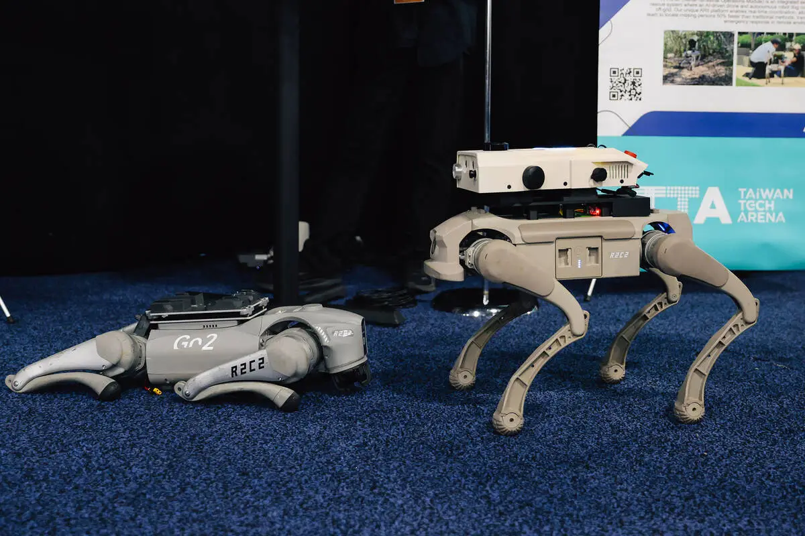

La domination des robots quadrupèdes
De O. Abdelwahd · Publié le 2 février 2026

Le CES 2026 a été, pour de nombreux constructeurs en robotique, l’occasion de dévoiler leurs dernières innovations.
Le salon a surtout mis en lumière la forte prédominance des robots quadrupèdes, au point de nous amener à nous interroger : où en est aujourd’hui le marché du robot quadrupède et pourquoi suscite-t-il un tel engouement ?
Même s’ils sont désormais moins médiatisés qu’il y a quelques années — laissant souvent la vedette aux robots humanoïdes sur les réseaux sociaux — les robots quadrupèdes n’en demeurent pas moins impressionnants par leur maturité technique et leur autonomie. Ces qualités ont séduit de nombreux secteurs professionnels, au point de faire du quadrupède le robot généraliste de réference.
L’adaptabilité, nerf de la guerre
Pourquoi les robots quadrupèdes semblent-ils aujourd’hui dominer le marché ?
La réponse tient en un mot : l’adaptabilité.
Face à leurs concurrents — robots bipèdes, robots à roues ou drones — les quadrupèdes se distinguent par une flexibilité et une polyvalence directement liées à leur design. Comme nous l’avons déjà évoqué dans un précédent article consacré aux nouveaux modèles présentés par Pudu, de plus en plus de secteurs s’intéressent à la robotique. Or, ces secteurs évoluent bien souvent dans des environnements complexes, pour lesquels les constructeurs doivent proposer des solutions capables de s’adapter en permanence.
Dans le monde réel, les robots sont confrontés à des espaces encombrés, étroits, irréguliers et imprévisibles, qu’il s’agisse d’un hôpital, d’un chantier ou des transports publics. Grâce à son système de locomotion dynamique, capable d’ajuster sa démarche et son équilibre, et à son centre de gravité bas, le quadrupède apparaît comme la plateforme idéale pour évoluer dans ces conditions.
Une plateforme naturellement polyvalente
La morphologie du robot quadrupède permet également l’intégration d’une large variété d’outils et de capteurs : LiDAR, caméras embarquées, capteurs acoustiques ou thermiques. Cette richesse sensorielle élargit considérablement le champ des usages possibles, de l’inspection industrielle à la surveillance de sites sensibles.
Il n’est donc pas surprenant que de nombreux analystes considèrent le robot quadrupède comme celui disposant du plus fort potentiel de croissance. Cette dynamique devrait conduire à une adoption plus large que celle de ses concurrents, d’autant plus que le coût des composants — batteries, capteurs, actionneurs — est en nette baisse.
Sa structure à quatre pattes, combinée à des batteries de grande capacité, permet en outre des missions de longue durée, un critère déterminant pour les applications industrielles ou logistiques.
La baisse généralisée des coûts de fabrication, particulièrement marquée chez les constructeurs chinois, joue également un rôle clé. Les actionneurs électriques, moins coûteux que les systèmes hydrauliques, les capteurs LiDAR de plus en plus performants et abordables, ainsi que l’essor des capacités de calcul embarquées, renforcent l’autonomie des quadrupèdes. Ces avancées leur permettent désormais de planifier, naviguer et interagir avec leur environnement de manière toujours plus fine.
Un marché mature dominé par quelques leaders
Aujourd’hui, le marché du robot quadrupède est structuré autour de plusieurs acteurs majeurs, parmi lesquels Pudu Robotics, ANYbotics, DEEP Robotics, mais surtout Unitree et Boston Dynamics.
Pionnier du secteur, Boston Dynamics demeure sans doute le nom le plus emblématique, notamment grâce à sa forte exposition médiatique. L’entreprise déploie son robot Spot dans de nombreux environnements industriels et institutionnels, avec un chiffre d’affaires estimé entre 100 et 200 millions de dollars par an. Présent au CES 2026 pour présenter les évolutions de Spot, Boston Dynamics conserve une position de leader technologique, avec un positionnement premium privilégié par les clients industriels et gouvernementaux.
En revanche, si l’on raisonne en volume, Unitree domine largement le marché. Le constructeur chinois, lui aussi présent au CES 2026, bénéficie pleinement de la dynamique du marché asiatique, portée par une forte demande locale et par un avantage compétitif décisif sur les coûts et la chaîne d’approvisionnement. Cette maîtrise industrielle lui permet de proposer des robots quadrupèdes à des prix très agressifs et de déployer une véritable stratégie d’échelle.
À côté de ces deux géants, d’autres acteurs gagnent du terrain, comme ANYbotics en Europe, ou encore des entreprises chinoises telles que Xiaomi, DEEP Robotics ou Pudu, qui vient récemment d’annoncer une nouvelle gamme de robots quadrupèdes.
Avec la baisse continue des coûts de fabrication et l’émergence d’un écosystème logiciel de plus en plus mature, il semble évident que les plus belles années du robot quadrupède sont encore devant lui.